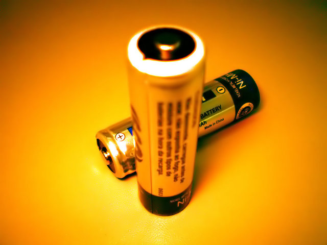

Electricity is one of the most basic needs of our modern 21st century lives. Electricity is used to heat and light our homes; to power our electronic toys, games and gadgets; and to run our appliances, tools, and equipment. Perhaps most importantly, electricity enables us to use microprocessors — which are the brains of all modern computers, including phones, laptops, tablets and more. But, what is electricity?
Electricity is a flow of charged particles. When charged particles are allowed to flow from one place to another, they transfer energy that can be used to power everything from a light bulb to an entire city. All of our everyday electronic gadgets — from cell phones to computers to microwave ovens — are powered by the flow of charged particles.
Electricity occurs naturally in everyday phenomenon such a lightning bolts and static shocks. Only in the past few centuries has mankind discovered how to harness energy in various forms and convert it to electricity, which can then be sent over large distances to heat and light our homes, as well as to run machines and gadgets in our offices and factories.
And, just in the past 50 years, we've taken another major step — creating the microprocessor, which harnesses the power of electricity to control the flow of information. With the microprocessor, we can perform calculations at speeds that are not humanly possible. By mixing microprocessors with electronic circuits, we can create devices that make our lives easier, more efficient and more fun.
A circuit is a closed loop that allows charged particles (or just charge) to flow through it. The parts of a circuit that charge flows through are called conductors — the most common form of conductor is a metal wire. Conductors are the most basic building blocks of circuits, and when you string together conductors in a closed loop, you have created an electric circuit.
In addition to conductors/wires, a typical circuit also has a power source and other components. The power source is what forces the charge to flow through the circuit. A common power source is a battery. The components are the parts of the circuit that are affected by the electric charge as it passes through them. Common components are things like lights, motors, switches, buttons, etc.
Lightbulb
Wire
Battery
For example, the circuit above contains a battery (a power source) and a lightbulb (a component), attached together with wires (conductors). The battery forces charge through the wires. When the charge flows through the lightbulb, it lights up.
Some circuits are very simple (like our battery and lightbulb example), while other circuits are very complicated, containing multiple power sources, thousands of wires and dozens (or hundreds) of components.
It can be hard to get an intuitive understanding of electricity because it's invisible. Charge flows through wires, but you can't see it. Sometimes it's easier to understand something complicated by using an analogy — another situation that works in a similar way.
A good analogy for electricity is water. The flow of charge through a conductor is very similar to the flow of water through a pipe. While this analogy isn't perfect, there are many similarities between flowing charge and flowing water. In fact, the two have so many similarities that we use many of the same equations to describe electric circuits as we use to describe water flowing through pipes.
Most of the electrical concepts throughout this guide use the water analogy to give a simple and intuitive understanding of what is going on inside of a circuit. These analogies allow you to understand what's happening inside a circuit without needing to know any equations (though we'll briefly discuss one of the most important equations later in this guide).
Here is a visual representation of the water analogy — a simple circuit with a battery is analogous to water flowing through a closed loop of pipe:
|
Charged Particles Battery Wire |
Water Molecules Pump Pipe |
Note: Because there is only a power source and no other components in this circuit, if you actually built it, you wouldn't see it do anything. In fact, a circuit like this with no components is called a short circuit, and because all it's doing is pushing charge around a closed loop with no components, it would quickly drain the battery. This is one of the reasons why we try to avoid short circuits.
In the visual example above, the battery forces charge around a closed circuit. And, the pump forces water molecules around a closed system of pipes. Here is a breakdown of the analogous components of the two systems:
|
ELECTRICAL CIRCUIT |
WATER CIRCUIT |
|
|---|---|---|
|
Power Source |
Battery |
Pump |
|
Conductor |
Wire |
Pipe |
|
Substance |
Charge |
Water |
Before we go any further, let's talk a little bit more about the power sources and conductors used in our analogy above, just to give a better idea of where the analogy is good, and also where the analogy starts to break down.
As mentioned earlier, power sources provide the energy to make charge flow in circuits. There are many different types of power sources, and we'll talk more about them in more depth in a later tutorial.
In our simple electrical circuit in the previous section, the power source is a battery. A battery converts chemical energy into electrical energy. In other words, inside a battery, a specific chemical reaction occurs that causes charge to be pulled into one side of the battery, and pushed out the other.
In the water analogy, the power source is a pump — a device that pulls water into one side, and pushes water out the other side, analogous to our battery.
What's great about this analogy is it is intuitively obvious that exactly as much stuff (charge/water) goes into the power source (battery/pump) as comes out. The battery does not create the charge that is being pushed around the circuit, just as a pump does not create water that is being pushed through the pipes.
Remember though, the water pump is just a model of the battery. Unlike the pump, the battery does not have any spinning moving parts inside. But, both batteries and water pumps are similar in that they are the sources of energy for their respective circuits.
Conductors are the "pipes" of a circuit. Conductors are made of materials that allow charge to flow freely through them. In general, this means conductors are made out of metal, with copper being one of the most common metals used.
One of the ways that the water analogy holds true is that just like water pipes are always filled with water (whether or not the water is flowing), conductors are always filled with charge. That said, there are also some important differences between conductors and pipes that you should keep in mind:
Real water pipes can leak water. But, conductors cannot leak charge — the charged particles are held too tightly to the conductor to escape.
With a water pipe, the water flows inside the pipe. But, with metal conductors, the charge flows throughout the metal, not just inside of it. Unlike with a water pipe, with a conductor there is no outside part that keeps the charge in — they are simply held in by some inherent properties of the metal. That said, many wires will also have a plastic coating over them — this coating is an insulator, which means that it doesn't allow charge to flow through it. You'll see that the wires in your kit come in many different colors — these are the colors of the insulators that are wrapped around the metal wires.
Voltage, current & resistance are the three most common measurements that can be made in an electrical circuit. We'll discuss each of these more in an upcoming tutorial, but for the next couple projects, it will be useful to have a rough idea of what these things are:
Voltage: The difference in charge between two points in a circuit. The higher the voltage in an electrical circuit, the more "forcefully" the charge will flow from one end of the circuit to the other. In our water analogy, higher voltage would be analogous to a larger water pump that could push water through the pipes with increased pressure.
Current: The rate of flow of electric charge. The higher the current in an electrical circuit, the more charge that is flowing through the circuit in a specific period of time. In our water analogy, higher current would be analogous to a greater volume of water moving through the pipe.
Resistance: The amount that a circuit component reduces (resists) the flow of charge. The higher the resistance in an electrical circuit, the lower the rate of charge flowing through the circuit. In our water analogy, higher resistance would be analogous to making a section of the pipe narrower, which would restrict the amount of water that could flow through the system.
Power, load & ground are three common parts of any electrical circuit.
Load
Power
Ground
We'll discuss each of these more in an upcoming concept, but for the next couple projects, it will be useful to have a rough idea of what these things are:
Power: This is generally the point of highest charge in an electrical circuit — for example, the positive terminal of your battery is typically what we consider the location of power in a circuit. In most of the projects we'll be doing, we'll refer to the power source as "3.3V" (since the power source we'll be using will be 3.3 volts). The power source provides the energy that makes the circuit do something useful.
Load: This is the part of an electrical circuit that actually uses the flow of charge to do something useful. In our circuits, these will be the components — things like lights, buttons, speaker, etc. The load uses the energy that the power source provides.
Ground: In an electrical circuit, ground is generally the point of lowest charge in the circuit. For example, in our lightbulb circuit above (and in most of the circuits we will build), the negative terminal of the battery is the point of lowest charge, and would be the ground point of the circuit. The reason we use the term "ground" is because in many electrical applications (like the electricity running through your house), the earth (the actual ground) is used as both our reference point of lowest charge and our physical point of attaching the electrical circuit — if you could look at the place where electricity comes into your house, you would see that there is a metal rod that connects this location to deep underground.
In our Assembly Guide, we mentioned that you should "ground" yourself before touching electronic components. Now that you have a conceptual idea of what ground is, we can explain this further...
Have you ever gotten a static shock by touching someone or something? Sometimes, electric charge builds up in your body. This charge is then released in the form of a static discharge (or shock) when you touch someone or something that has a different amount of charge. In other words, if there is a voltage difference between you and some object, and you touch that object, you'll get a shock. Once your body has discharged the excess charge, you don't get any more shocks — until, of course, you build up more charge.
If you were to touch an electrical component when you have a charge built up in your body, that resulting static shock that you feel could very well be enough to zap the component and break it (we sometimes call this "frying the component.") So, to avoid frying any electrical components, we recommend that you discharge any excess charge in your body before touching the components.
You can ground yourself by touching any piece of metal that is connected via some relatively direct path to the earth. Since all the electrical outlets in your house are connected to earth ground, you can generally ground yourself by touching the metal case of an electrical device that is plugged in. On the CREATOR Kit, you can touch the metal casing on any of the USB ports or the Ethernet port on the back of the Raspberry Pi — assuming the CREATOR Kit is plugged into a wall outlet (and thus having a path back to ground).